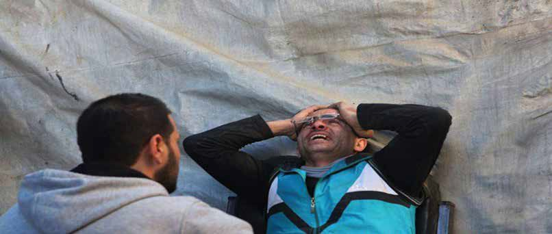

Aleppo, Syria. 11, March 2016. A man cries in despair after his wife, son, daughter, mother-in-law, and neighbours are killed during Russian airstrikes in the Tabbarat al Madi neighbourhood of Aleppo. The man’s five-year-old daughter is injured during the airstrikes. More than ten people have also been killed and a number of people injured by Russian airstrikes in the Aleppo neighbourhood of al-Saliheen. During the last two weeks Images Live has filmed in the Idlib area, in places such as Jisr as-Shugur and Maarat An-Numan to check whether the ceasefire was respected. The areas have been subjected to Russian airstrikes on a daily basis leaving behind a number of civilians killed and injured. In one single night Jisr As-Shughur was hit by 60 rockets. Indeed, 90% of the inhabitants of Jisr As-Shughur have left the town because of the Russian airstrikes, while only 10% are still in the town. The Civil Defense has been struggling to access the hit areas, while the outskirts of the town cannot be reached because of the intensity of the airstrikes. Images Live has spent days in these areas and followed the Syria Civil Defense, thus seeing the Russian forces violating the ceasefire and the impact of these actions on civilians. While areas around Idlib have been subjected to airstrikes almost daily, over the last two weeks, even though in a lesser intensity than previously, airstrikes in Aleppo have actually resumed in the last few days. As for clashes between the regime forces and the opposition, Images Live has not witnessed clashes in general, but has only come across three injured militant fighters. The lack of major hostilities and clashes has been confirmed by the fact that when Images Live visited hospitals the casualties were civilians and caused by airstrikes. The UN hopes that the reduction of violence due to the ceasefire in Syria will help to restart peace talks that collapsed in the previous month, and to put an end to the nearly five-year civil war. While the Russians put emphasis on the violation of the ceasefire in Syria by militants, the American secretary Kerry argues that the two-week-old ceasefire in Syria is ‘largely holding’. Although the US recognises that breaches have been carried out by the Syrian government through attacks on civilians and opposition forces, those violations should not derail the UN-mediated peace talks.